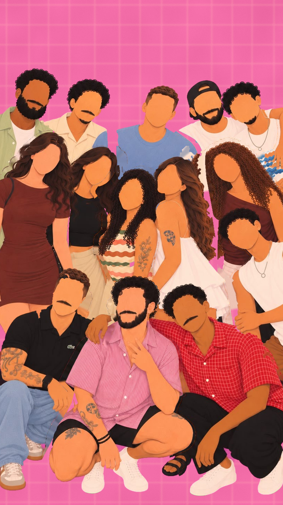
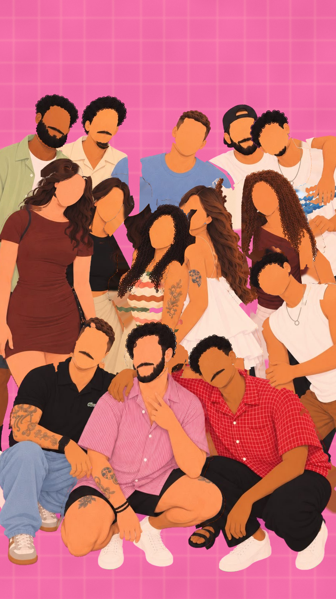
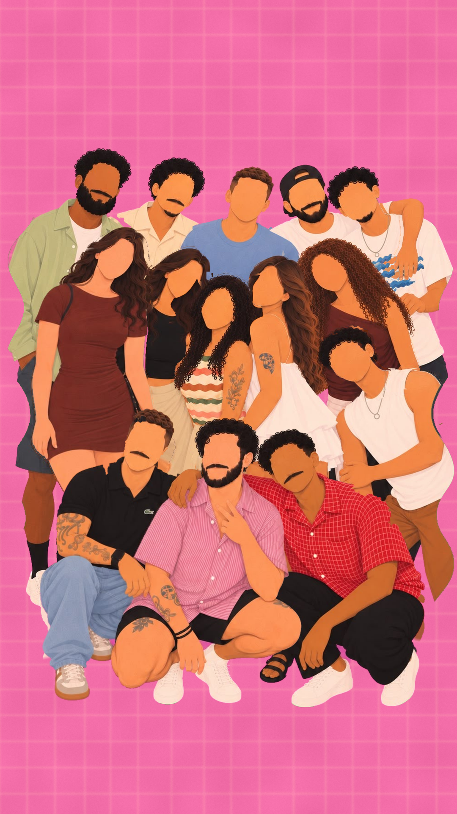
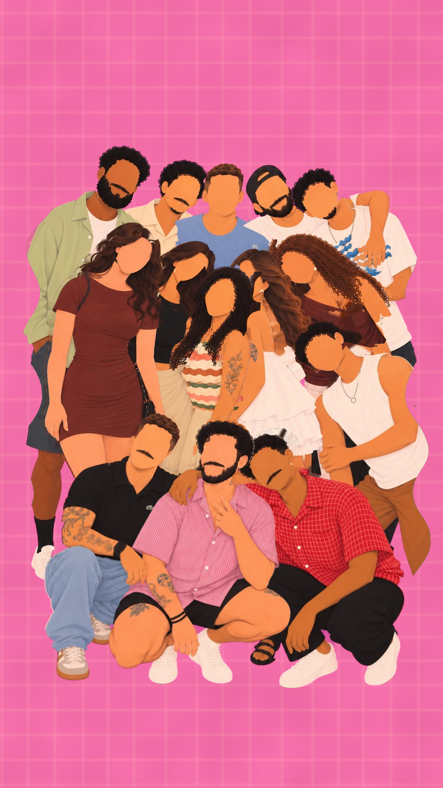
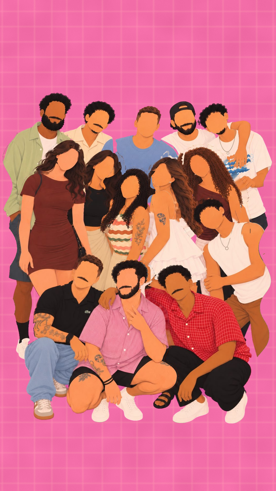
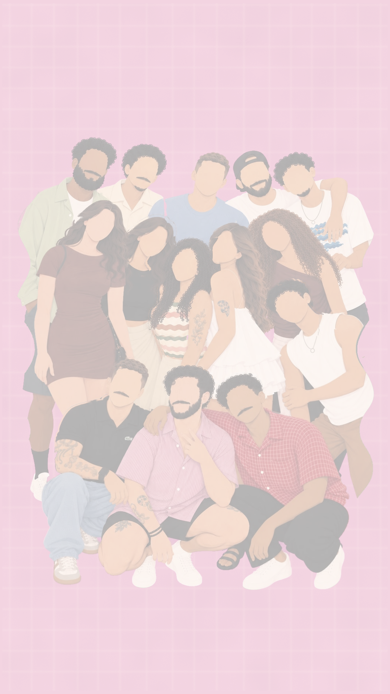
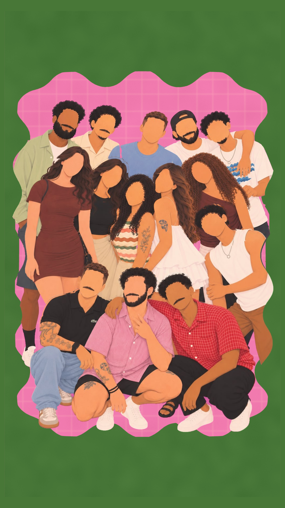

A linguagem do movimento
Ritmo
120 BPM: uma batida = 0,5 s. Risadas, viradas de cabeça e o agachar da frente caem na batida ou na meia batida; o clique cai na batida 16 (8,0 s).
Gente
Cada pessoa é um recorte da própria ilustração: o corpo inclina a partir dos pés, a cabeça gira e inclina a partir do pescoço. Sem boca, a risada é corpo: ombros que sacodem, cabeça para trás.
Conversa
Duplas e trios se olham de verdade: a cabeça vira uns 20° para o parceiro e inclina um fio na direção dele. Nunca todos ao mesmo tempo: cada par no seu tempo.
Câmera
Nasce perto dos rostos (1,2×) e abre devagar até a foto inteira exatamente no clique; depois do clique, um empurrão vivo de 0,4 %/s.
Hold
Antes do clique a turma respira e balança um fio; depois do clique a foto fica parada (é uma foto) e a vida vem da moldura, das estrelas e de um reflexo de papel que passa uma vez.
Objetos
Mola só no que é objeto: a moldura chega elástica de fora para dentro, as estrelas pulam uma a uma com um giro curto.
Sequência
A turma chega
Espalhados e conversando em duplas e trios, eles se juntam para a foto: andam para perto, se olham e dão risada.


Movimento
- 0,0 sObjeto
Cada um sai do seu lugar num tempo diferente (até 0,4 s de diferença) e anda para o meio, quicando um fio a cada passo.
- 0,3 sObjeto
As cabeças viram para o parceiro em 350 ms: a de trás conversa entre si, as meninas em pares, os da frente em trio.
- 1,0 sObjeto
Primeira risada (os dois da esquerda, atrás): ombros sacodem 4 vezes por segundo, cabeça vai para trás 11°.
- 1,5 sObjeto
A risada passa adiante: as meninas do meio (1,5), o trio da frente (2,1), os dois abraçados de trás (2,5), a dupla da esquerda (3,0).
- 2,5 sObjeto
Os dois abraçados de trás riem juntos; o do meio vira para eles (2,4) e ri por último (2,75).
- 3,0 sObjeto
A dupla da esquerda ri; a de preto vira para a do meio, puxando o trio (3,05).
- 3,5 sVida no hold
Todo mundo perto, respirando e balançando um fio; a câmera continua abrindo.
- 3,85 sTransição
Alguém chama: as cabeças viram para a câmera em onda, do centro para as pontas, 35 ms entre elas. Corte invisível para a próxima.
As poses
Viram para a câmera, os da frente agacham um a um, e a turma tenta uma pose, outra, até assentar na pose final.



Movimento
- 0,5 sObjeto
Os três da frente agacham um a um na batida (5,0 · 5,125 · 5,25 s), com um amassadinho de 4 % na chegada: tum, tum, tum.
- 0,7 sObjeto
A turma se aperta: todos andam o último pedaço até o lugar da foto.
- 1,0 sObjeto
Pose 1, "aperta!": cada um inclina para o centro (mais quem está na ponta) e tomba a cabeça junto.
- 1,85 sObjeto
Pose 2: inclinam para o outro lado, queixo para cima 7°, cabeças alternando de lado.
- 2,6 sVida no hold
Assentam na pose final num movimento só; respiram e balançam um fio, segurando para o clique.
O clique
O flash congela a turma; a foto nasce clara e revela a cor, a moldura chega elástica de fora para dentro e as estrelas pulam uma a uma.


Movimento
- 0,0 sLuz
Flash: o branco estoura em 3 quadros e apaga em 400 ms; tudo para nesse instante.
- 0,05 sLuz
A foto nasce clara e um pouco desbotada e revela a cor em 1 s, como papel de foto.
- 0,28 sObjeto
A moldura verde chega de fora para dentro, esticada na vertical, passa um fio do lugar e assenta com mola (1,15 Hz).
- 1,0 sObjeto
As estrelas pulam uma a uma no sentido do relógio, 45 ms entre elas, girando 70° até parar.
- 1,7 sVida no hold
Hold: um reflexo de papel fotográfico atravessa a foto uma vez; as estrelas giram e cintilam devagar, cada uma no seu tempo.
- 2,5 sVida no hold
As estrelas cintilam: cada uma pulsa 3 % e gira até 7°, em períodos que não se repetem juntos.
- 3,4 sCâmera
A câmera segue chegando um fio até o último quadro: a foto nunca fica congelada.